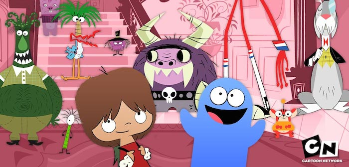

TV Shows = Great Ringtones

Californication

Starting off with a whistle before migrating to playful beats and a cool bass guitar. There's a reason this has been my ringtone since 2008.

My Name is Earl

This quick song plays during the end credits and comes complete with a southern guitar, harmonica, and a solid hook.
Awkward

Another end credits song but much more subtle with a simple keyboard perfectly timed to 30 seconds.
Misfits

The loudest choice and a good song in its own right. The perfect ringtone starts about 26 seconds in with a guitar/drum loop before the singer notifies you of 'people conversating'.
Gilmore Girls

Quiet and undoubtable feminine, a simple guitar plays while a female voice sings 'la-la-las'. Fans of the show would probably recognize it.
Man Seeking Woman

Horns play on top of a hodge podge of eclectic sound-effects. Jittery enough to get your attention but the horns put together a pretty nice 30 seconds.
Six Feet Under

Classic yet contemporary from the composer of the American Beauty soundtrack. Solo horn accompanied by drops in an echoey chamber.
Foster's Home for Imaginary Friends

If Californication hadn't occupied my phone for 8 years, this would be my ringtone. A kazoo joins a children's piano creating an orchestra of silly. Funny kids show too.